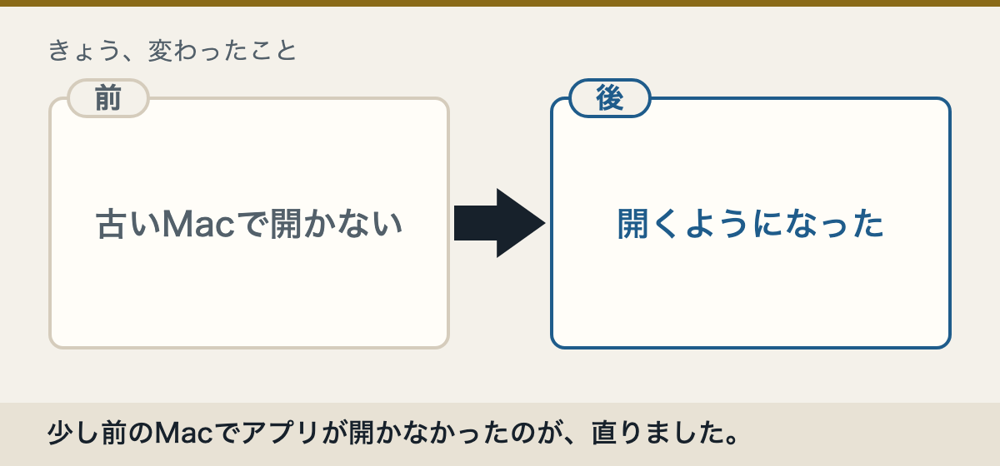
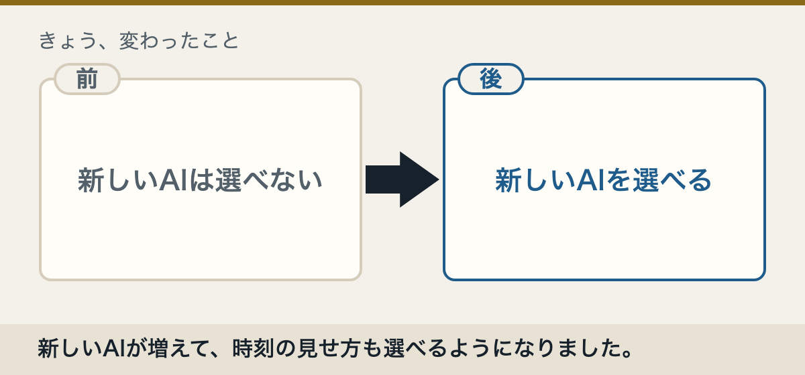
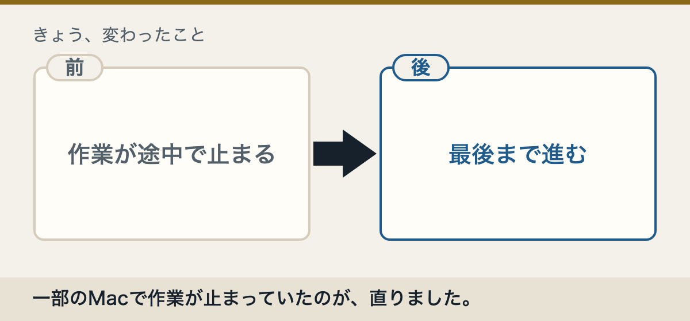

古いMacで開けない問題が直りました
つまり、あなたには何が変わる？
macOS 12を使っていて急に開けなくなった人は、新しい版でまた使えるようになります。定期的な作業が止まる問題も直りました。

新しいAIと、時刻の表示設定が増えました
つまり、あなたには何が変わる？
新しいAIを選べるようになり、時刻の見せ方も合わせやすくなりました。フォルダの外を初めて読む前に確認が出る仕組みも増えました。

一部のMacで作業が止まる問題が直りました
つまり、あなたには何が変わる？
作業の途中で見慣れない英語が出て止まっていた人は、新しい版で直る可能性があります。「いつも許可する」が保存されない問題も直りました。
